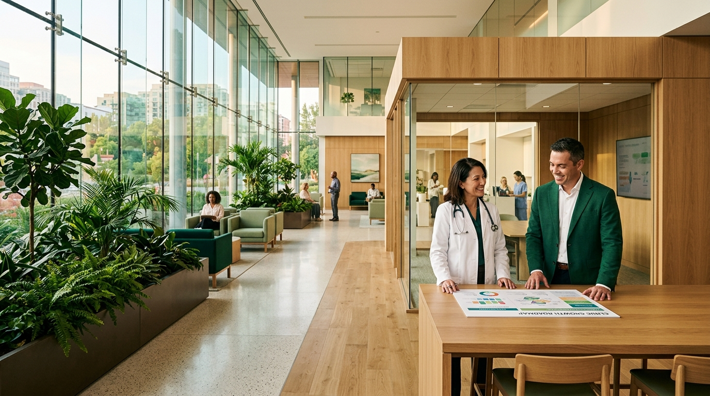

Apakah klinik saya tumbuh sesuai potensinya?
↗Healthcare Growth Partner
Pertumbuhan klinik dimulai dari pemahaman yang lebih baik.
INSIDER membantu pemilik klinik membaca bisnisnya, menemukan peluang yang relevan, lalu menentukan langkah pertumbuhan bersama.
Berangkat dari konteks klinik Anda, bukan strategi siap pakai yang dipaksakan untuk klinik Anda.
INSIGHT DRIVES PROGRESSData. Insight. Pertumbuhan.
01
Insight yang jelas
02
Strategi yang relevan
03
Pertumbuhan berkelanjutan
Tantangan yang kami pahami
Data klinik terus bertambah. Arah berikutnya belum selalu terlihat.
Pemilik klinik menjaga pelayanan, tim, dan operasional setiap hari. Di tengah kesibukan itu, pertanyaan strategis sering sulit dijawab hanya dari rutinitas harian.
Layanan mana yang paling bernilai bagi klinik?
↗Pasien mana yang paling tepat untuk kami layani?
↗Apa prioritas pertumbuhan yang sebaiknya diambil?
↗Sering kali jawabannya sudah tersimpan di dalam data dan pengalaman klinik. INSIDER membantu merangkainya menjadi pemahaman dan langkah yang bisa dijalankan.
Cara pandang INSIDER
Pemilik klinik paling memahami kliniknya.
Pengalaman pemilik dan tim bertemu dengan analisis, struktur berpikir, serta perspektif dari luar operasional harian. Dari kolaborasi itu, strategi tumbuh dibangun bersama sesuai keadaan klinik.
Kenali pendekatan kami
Pemilik Klinik
Pengalaman
dan konteks
CO-CREATION
INSIDER
Analisis
dan perspektif
Strategi yang relevan dan realistis
Hasil Bersama
Dari pemahaman hingga implementasi
Empat langkah menuju pertumbuhan yang lebih terarah.
Setiap tahap membantu klinik memahami kondisi saat ini, menyusun prioritas, dan belajar dari proses yang berjalan.
01
DISCOVERY
Memahami bisnis klinik
Kami mendengar visi, tujuan, kondisi, dan tantangan yang dihadapi pemilik serta tim klinik.
Yang dibangunPemahaman bersama tentang konteks klinik
02
ASSESSMENT
Mengubah data menjadi insight
Kami membaca data pasien, layanan, transaksi, dan operasional untuk menemukan pola serta peluang.
Yang dibangunGambaran kondisi dan peluang yang lebih jelas
03
GROWTH BLUEPRINT
Menentukan arah pertumbuhan
Bersama, kami menyusun prioritas, strategi, dan rencana kerja yang sesuai dengan kondisi klinik.
Yang dibangunRoadmap yang realistis dan terukur
04
GROWTH PARTNERSHIP
Mendampingi implementasi
Kami mendampingi pelaksanaan, memantau perkembangan, dan menyesuaikan strategi dari hasil evaluasi.
Yang dibangunKemajuan yang dipantau dan diperbaiki bersama
Hasil yang dituju
Keputusan yang lebih baik untuk klinik yang lebih siap tumbuh.
Arah kerja ditentukan dari kebutuhan dan kondisi klinik, dengan kemajuan yang ditinjau bersama.
Pemahaman lebih dalam terhadap bisnis dan pasien
↗Prioritas layanan dan peluang yang lebih jelas
↗Keputusan yang berangkat dari data dan konteks
↗Strategi yang dipantau dan dikembangkan bersama
↗Layanan INSIDER
Dukungan yang mengikuti kebutuhan klinik.
Growth Partnership adalah proyek dengan ruang lingkup dan timeline yang disepakati bersama. Pembayaran dapat dijadwalkan per bulan mengikuti timeline proyek.
LAYANAN UTAMA
Growth Partnership
Pendampingan berbasis kolaborasi untuk membantu klinik menyusun dan menjalankan prioritas pertumbuhan yang relevan.
Pelajari detail Core ServiceBerbasis proyek
Ruang lingkup, timeline, dan jadwal pembayaran dibahas bersama.
Layanan pendukung, sesuai kebutuhan
Marketing & Brand
Membantu klinik menjangkau pasien yang tepat dan membangun komunikasi yang optimal.
- Strategi marketing
- Konten dan media sosial
- Website dan materi brand
Digital & System
Membantu klinik memanfaatkan data dan teknologi untuk mendukung keputusan serta operasional.
- Patient journey map
- Dashboard dan laporan
- Integrasi sistem
Team & Operations
Mendukung tim dan proses kerja agar klinik lebih siap menjalankan rencana pertumbuhannya.
- Pengembangan SOP
- Pelatihan tim
- Process Improvement
Dukungan tambahan dipilih berdasarkan konteks dan prioritas masing-masing klinik. Pelajari detail Enabler Service
INSIDER · Healthcare Growth Partner
Potensi pertumbuhan klinik sudah ada. Mari temukan arahnya bersama.
Kami mulai dengan memahami klinik Anda—lalu menyusun langkah yang paling relevan untuk dijalankan.
Lihat cara kerja
Langkah relevan & terukur
